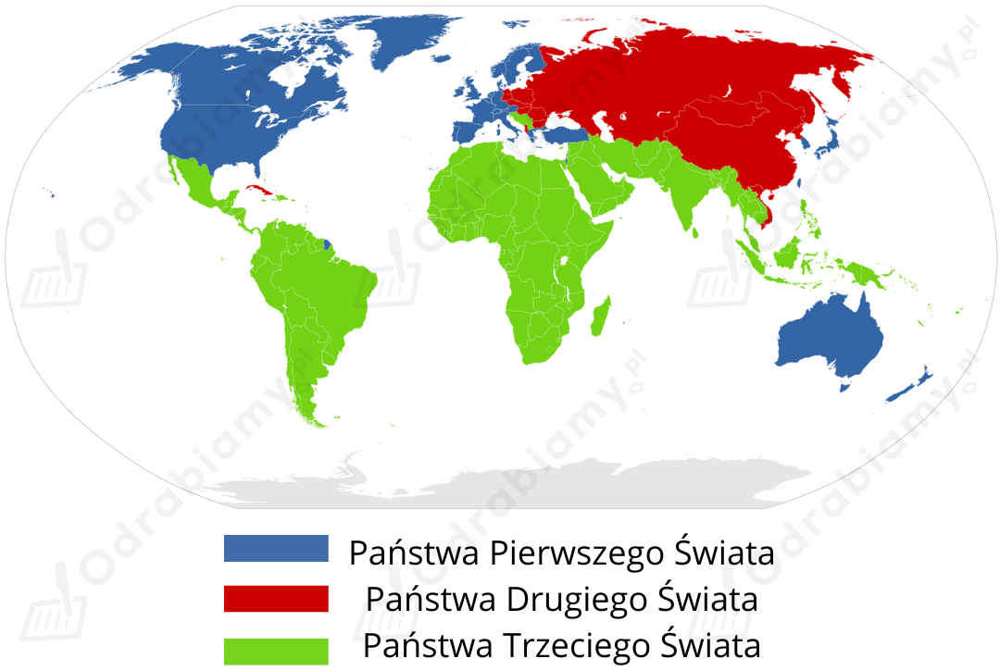

Przyczyny konfliktu między Żydami i Palestyńczykami:
a) kwestie polityczne i terytorialne:
Kwestie społeczne:
Przebieg konfliktu między Żydami i Palestyńczykami - najważniejsze etapy:
Proces dekolonizacji w Afryce - najważniejsze etapy:
1) Klęska Francuzów w Indochinach była ważnym wydarzeniem dla Algierczyków, którzy wykorzystali osłabienie metropolii i podjęli walkę o niepodległość. W latach 1954-1962 trwała wojna algierska, która zakończyła się klęską Francji i uzyskaniem przez Algierię niepodległości.
2) Drugi etap dekolonizacji objął swym zasięgiem arabskie kraje Afryki Północnej oraz dwa kraje Czarnej Afryki. W 1957 r. niepodległość uzyskała Ghana oraz a w 1958 r. Gwinea.
3) Kolejny etap to tzw. "Rok Afryki", czyli rok 1960, w którym niepodległość uzyskało 17 państw. A w latach. 60. XX w. były to w sumie 32 państwa.
4) Ostatni etap dekolonizacji Afryki trwał od połowy lat 70. do 1990 r. Wtedy niepodległość kolonie portugalskie, Komory, Seszele, Francuskie Terytorium Afarów i Issów (dzisiejsze Dżibuti), Rodezja i Afryki Południowo-Zachodniej (dzisiejsza Namibia).
W ten sposób na terenach europejskich posiadłości kolonialnych w Afryce powstało 50 niepodległych państw, które weszły (z wyjątkiem RPA) w skład Organizacji Jedności Afryk.
Państwa Trzeciego Świata to pojęcie odnoszące się do bardzo zróżnicowanej grupy państw Afryki, Ameryki Łacińskiej, Azji i Oceanii. Często bywa synonimem państw słabo rozwiniętych, które w okresie zimnej wojny nie należały ani do bloku zachodniego (kapitalizm), ani do bloku wschodniego (socjalizm).
Państwa Trzeciego Świata to np.:

Źródło mapy: Wikimedia Commons.